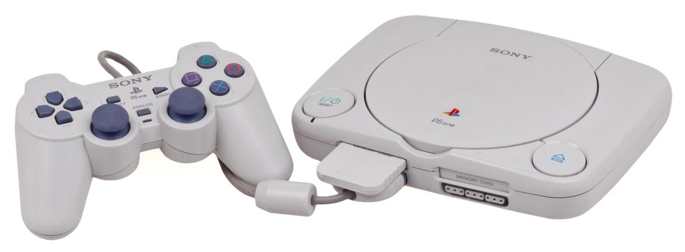
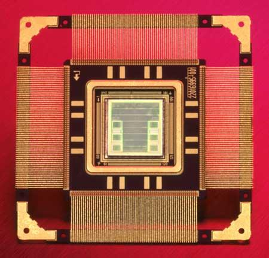

จากซีพียูเครื่องเล่นเกมสู่ภารกิจพิชิตอวกาศ
บทความทางวิทยาการคอมพิวเตอร์
ภารกิจหนึ่งขององค์การบริหารการบินและอวกาศเแห่งชาติหรือนาซา
(National Aeronautics and Space Administration: NASA)
คือ การศึกษาวิจัยเพื่อแสวงหาความรู้เกี่ยวกับดวงดาวและอวกาศ
ดังนั้นเพื่อให้ภารกิจนี้ประสบความสำเร็จให้มากที่สุด นาซาจึงมีโครงการส่งยานอวกาศออกไปค้นหา สำรวจดวงดาว วัตถุ ปรากฏการณ์ต่างๆที่เกิดในอวกาศ และสิ่งมีชีวิตนอกโลก
โดยโครงการนี้จะต้องมีการวิจัยและพัฒนาเทคโนโลยีด้านต่างๆ ที่เกี่ยวข้องกับการเดินทางไปในอวกาศ ซึ่งรวมไปถึงการพัฒนาเทคโนโลยีด้านคอมพิวเตอร์
เนื่องจากต้องใช้คอมพิวเตอร์ควบคุมการทำงานของยานอวกาศและสื่อสารมายังโลกตลอดการเดินทาง คอมพิวเตอร์ดังกล่าวจะต้องสามารถทำงานได้อย่างถูกต้อง แม่นยำและไม่หยุดการทำงานตลอดอายุการใช้งาน
ภารกิจยานอวกาศนิวโฮไรซอน การเดินทางไปสำรวจดาวพลูโต
ย้อนกลับไปในปี ค.ศ. 2006 นาซาได้ส่งยาน อวกาศไร้คนขับชื่อนิวโฮไรซอน(New Horizons) ไปสำรวจดาวพลูโตรวมถึงดวงจันทร์ชารอน
นอกจากนี้ยานอวกาศดังกล่าวยังได้เดินทางที่แถบไคเปอร์ (Kuiper Belt) ซึ่งอยู่ห่างจากวงโคจรของดาวเนปจูนไม่ต่ำกว่า 1 พันล้านไมล์ เพื่อสำรวจวัตถุอวกาศต่างๆ ที่ลอยอยู่บริเวณนี้
ในเดือนกรกฎาคมปี ค.ศ. 2015
ยานอวกาศนิวโฮไรซอนได้เคลื่อนที่เข้าใกล้ดาวพลูโตมากที่สุด
ทำให้นักวิทยาศาสตร์สามารถยืนยันได้ว่าดวงดาวและวัตถุที่อยู่ในบริเวณนี้มีองค์ประกอบส่วนใหญ่เป็นน้ำแข็ง
ยานนิวโฮไรซอนมีตัวตรวจจับและเครื่องมือที่วัดค่าต่างๆ ทางฟิสิกส์
จึงได้ส่งข้อมูลอุณหภูมิ คลื่น รังสี รวมทั้งการถ่ายภาพวัตถุอวกาศที่ยานเคลื่อนผ่านส่งกลับมายังโลก
ซึ่งเป็นภารกิจที่ใช้คอมพิวเตอร์ควบคุมการทำงานอัตโนมัติ คอมพิวเตอร์ที่ใช้จึงต้องสามารถทำงานตลอดการเดินทางจากโลกไปยังดาวพลูโตและแถบไคเปอร์เป็นเวลานานกว่า 10 ปี
โดยใช้ตัวประมวลผลที่แม่นยำและมีความเสถียรสูง นาซาได้เลือกใช้ซีพียู MIPS R3000 ในการประมวลผลและควบคุมการทำงานเพื่อให้ภารกิจของยานอวกาศบรรลุเป้าหมาย

ซีพียู MIPS R3000
เป็นซีพียูแบบแกนเดียว(single core) ขนาด 32 บิต ที่ผลิตขึ้นในปี ค.ศ. 1988 มีชุดคำสั่งที่เล็กมากเมื่อเทียบกับซีพียู 8086
มีความถี่ 16.67 – 33.33 MHz ซึ่งปัจจุบัน (ค.ศ.2016) ซีพียูบางตัวมีความเร็ว 4 GHz หรือมากกว่านั้น
โดยในช่วงแรกมีการนำซีพียู MIPS R3000 นี้ไปใช้สำหรับหน่วยประมวลผลกลางของเครื่องคอมพิวเตอร์ Work station และ Server ต่อมาในปี ค.ศ. 1994
บริษัทโซนี่นำซีพียูชนิดนี้มาใช้เป็นตัวประมวลของเครื่องเล่นเกม Play station ซึ่งเป็นเครื่องเล่นที่ได้รับความนิยมเป็นอย่างมาก เช่น PS1 PS2 และ PSX
จึงทำให้ซีพียูนี้เป็นที่รู้จักอย่างแพร่หลายในฐานะซีพียูสำหรับเครื่องเล่นเกม และต่อมานาซาก็ได้นำซีพียูนี้ไปพัฒนาเพื่อใช้เป็นซีพียูสำหรับคอมพิวเตอร์ของยานอวกาศนิวโฮไรซอน ในภารกิจสำรวจดาวพลูโต

จากซีพียูเครื่องเล่นเกม สู่ซีพียูยานอวกาศ
จากซีพียู MIPS R3000 ซึ่งเป็นซีพียูสำหรับเครื่องเล่นเกม นาซาได้พัฒนาต่อเป็นรุ่นที่ใช้สำหรับยานอวกาศนิวโฮไรซอน เรียกว่า Mongoose-V
โดยมีความเร็ว 12 MHz และสามารถทนต่อคลื่นและรังสีต่างๆ ที่อาจจะทำให้วงจรเสียหายได้ระหว่างเดินทางในอวกาศ ซีพียูนี้ได้เดินทางไปกับยานนิวโฮไรซอนในปี ค.ศ. 2006
และพิสูจน์ให้เห็นว่าสามารถทำงานได้อย่างต่อเนื่องโดยไม่มีปัญหาใดๆ ตลอดเวลาระยะเวลา 9 ปีจากโลกสู่ดาวพลูโต จะเห็นได้ว่าจากซีพียูเครื่องเล่นเกมที่เราใช้เพื่อความสนุกสนานและความบันเทิงได้ก้าวขึ้นเป็นซีพียูสำหรับคอมพิวเตอร์ในยานอวกาศในที่สุด
แล้วเพราะเหตุใดนาซาจึงเลือกซีพียูรุ่นนี้?
ปัจจัยที่นาซาเลือกซีพียู MIPS R3000
ผู้อ่านอาจจะสงสัยว่าเหตุใดนาซาเลือกซีพียูรุ่นเก่าตัวนี้ติดตั้งไปกับยานอวกาศในโครงการสำรวจอวกาศที่มีมูลค่านับพันล้านดอลลาร์สหรัฐ เหตุใดไม่เลือกซีพียูที่มีประสิทธิภาพสูงกว่านี้
นาซาเลือกซีพียูนี้เนื่องจากต้องการระบบคอมพิวเตอร์ที่มีความพร้อมใช้งานตลอดเวลา คงทนแข็งแรง สามารถทำงานได้ต่อเนื่องไม่มีวันหยุดภายใต้สภาวะแวดล้อมในอวกาศที่ไม่สามารถคาดเดาได้ นอกจากนี้ต้องมีความน่าเชื่อถือของระบบนั่นคือ
ซีพียูสามารถประมวลผลข้อมูลได้อย่างถูกต้องโดยไม่มีข้อผิดพลาด
ความสำเร็จของซีพียู MIPS ต่อภารกิจสำรวจอวกาศ
แม้ซีพียู MIPS R3000 จะมีความเร็วไม่สูงมาก แต่นาซาก็ได้ตัดสินใจเลือกใช้ซีพียูตัวนี้ เพราะได้ผ่านการทดสอบทั้งในด้านความคงทนต่อการทำงานและความน่าเชื่อถือในการประมวลผล
ซีพียูตัวนี้จึงเหมาะสมกับการเดินทางพิชิตอวกาศในครั้งนี้ ยานอวกาศ นิวโฮไรซอน พิสูจน์ให้เห็นแล้วว่าสามารถทำงานได้ต่อเนื่องอย่างถูกต้องแม่นยำตลอดเวลา 9 ปี และยังคงปฏิบัติภารกิจสำรวจอวกาศอย่างต่อเนื่องจนกว่าจะหมดอายุการใช้งานหรือจนกว่าจะขาดการติดต่อ